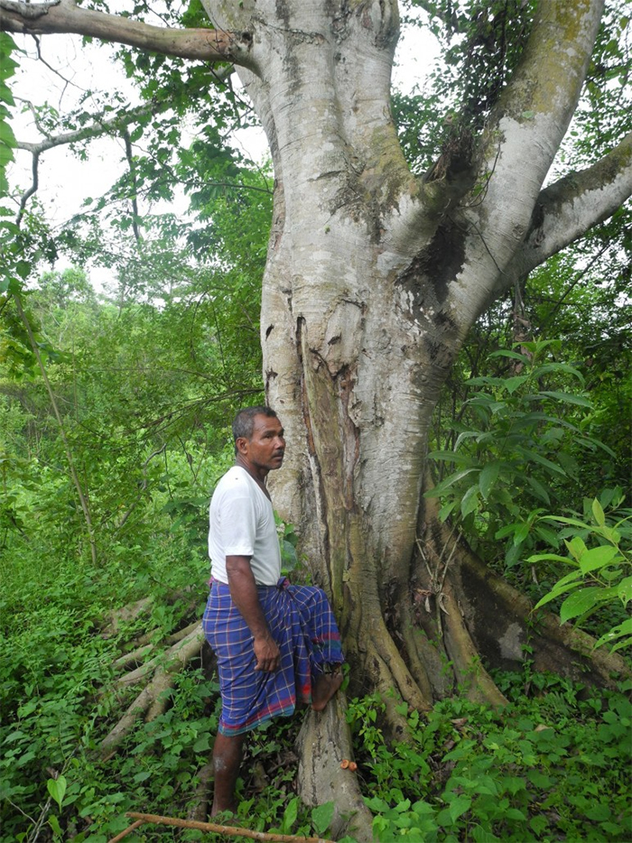

Man Plants A Tree Every Day For 40 Years Now Has A Forest Bigger Than Central Park
What used to be a landscape devastated by erosion is now 1,360 acres of forest and it's all thanks to one Indian man named Jadav Payeng. Jadav planted a tree every single day for 40 years and now this man-made forest is bigger than Central Park. Now this incredible forest is home to hundreds of elephants, rhinos, boars, reptiles, and birds. This botanical-enthusiast says he is planning to plant trees until his "last breath". “Nature is God. It gives me inspiration. It gives me power … As long as it survives, I survive."
